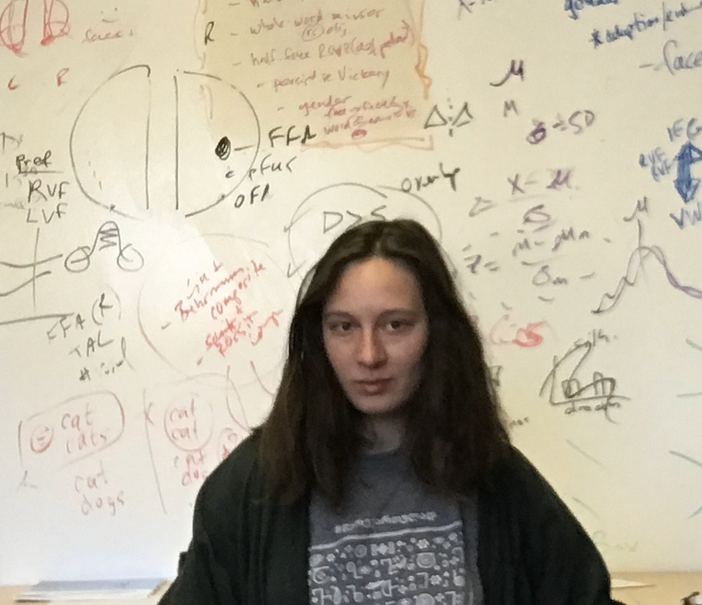

Ana Chkhaidze

About me
I am a PhD student in Cognitive Science at UC San Diego working with Lera Boroditsky. I'm from Georgia - the country, not the state. I enjoy reading fiction, doing yoga, traveling the world (Mexico!). I am fascinated by the relationship between the "external" world - culture, language, architecture - and human mind. I would love to have more time to explore and photograph architecture, but as a great philosopher Mick Jagger once said, “You can’t always get what you want.” You can check out what I've found so far on my Instagram. I also love exploring interesting food and wine scene - after all, I’m from the country with an 8000 year-long tradition of winemaking and no, that’s not a typo.
I have degrees in Social Sciences, Biology and Neurosciences from Free University of Tbilisi, Agricultural University of Georgia, UCSF, and University of Nevada, Reno. Before starting my PhD in Cognitive Science, at different times, I studied schizophrenia, epilepsy, and visual perception, and I worked as a researcher, data scientist, exhibition host, and math teacher.
Research
I’m interested in the interplay between language and mind. How and to what extent do the languages we speak shape our minds and perception? Can there be a language in which quantum physics becomes more accessible? Can we blame our verbs for their lack of responsibility? Using computational and experimental methods, currently, I am studying (1) structure and function of inner speech; (2) how people understand concept of time in terms of spatial metaphors; (3) how do the metaphors we use to discuss complex social issues shape our attitudes towards them.
News
2020/10 Gave a talk at STEM-talks2020/10 Organized science symposium STEM-talks; 19 speakers from 6 different countries, ~100 participants
2020/09 Started teaching at Ilia State University
2020/09 Cofounded ISGS – International Society of Georgian Scientists, aiming to popularize science in Georgia
2020/04 Gave a guest lecture at the Free University of Tbilisi
2020/03 Gave a talk and presented a poster at CNS; Virtual Meeting
2020/03 Grant proposal rejected by UC-CARE fellowship
2020/03 Admitted as an instructor to Clubes de Ciencia; Ensenada, Mexico (CANCELED because of COVID-19)
2020/03 Will be giving a talk and presenting a poster at CNS; Boston, USA (CANCELED because of COVID-19)
2020/02 Was featured in Forbes Georgia 30 Under 30 in Science and Medicine category
2019/08 Presented a poster poster at ECVP; Brussels, Belgium
2019/06 Gave a talk at BRAINstorming; Tbilisi, Georgia
2019/05 Gave an interview to Forbes Woman Georgia about the interaction between language and human mind
Publications
Opposite lateralization patterns for face recognition and gender processing.
Ana Chkhaidze, Lars Strother. (In prep)
Potassium current deficit in reticular thalamic cells causes epilepsy in SCN1A-deficient Dravet syndrome. (Cell Reports).
Stefanie Makinson, ..., Ana Chkhaidze et al. (2019)
Catching Up With Wonderful Women: The Women-Are-Wonderful Effect is Smaller in More Gender Egalitarian Societies. (International Journal of Psychology).
Kuba Krys, ..., Ana Chkhaidze et al. (2017)
Be Careful Where You Smile: Culture Shapes Judgements of Intelligence and Honesty of Smiling Individuals. (Journal of Nonverbal Behavior).
Kuba Krys, ..., Ana Chkhaidze et al. (2016)
Conferences & Talks
The battle of the hemispheres: opposite lateralization patterns for face recognition and gender processing. (Talk) Cognitive Neuroscience Society Meeting (Virtual).
A. Chkhaidze. (2020)
Categorical perception of face identity and gender. (Poster) Cognitive Neuroscience Society Meeting (Virtual).
A. Chkhaidze, Matthew Harrison, Zhiheng Zhou, Lars Strother. (2020)
Categorical perception of faces and cerebral laterality. (Poster) The European Conference on Visual Perception, Leuven, Belgium.
A. Chkhaidze, L. Strother. (2019)
A divided visual field approach to the categorical perception of faces. (Talk) BRAINstorming, Tbilisi, Georgia.
A. Chkhaidze. (2019)
Face recognition, linguistic categorization, and laterality. (Poster) Neuroscience Symposium at UNR, Reno, NV.
A. Chkhaidze. (2019)
1st student neuroscience conference in Georgia. (Organizer) Free University of Tbilisi, Georgia.
A. Chkhaidze. (2018)
The Role of Thalamus in Dravet Syndrome. (Talk) BRAINstorming, Tbilisi, Georgia.
A. Chkhaidze. (2017)
Are schizophrenia patients worse performers of dual-tasking? Insights from motor timing. (Poster) The European College of Neuropsychopharmacology Congress, Amsterdam, Netherlands.
M. Malania, E. Chkonia, A. Chkhaidze, A. Kezeli, W. Wolf, M. Sharikadze. (2015)
Teaching
UCSD
COGS 1. Intro to Cognitive Science (Winter 2020, Fall 2020)
COGS 14B. Introduction to Statistical Analysis (Summer 2020)
COGS 102A. Cognitive Perspectives (Summer 2020)
COGS 11. Minds and Brains (Spring 2020)
Ilia State University
Cognitive Science (Fall 2020)
Language and Cognition (Fall 2020)
University of Nevada, Reno
PSY 210. Statistical Methods (Spring 2018)
PSY 301. Experimental Psychology (Fall 2018, Spring 2019)
Free University of Tbilisi
PHYS 406020. Neuroscience (Fall 2017)